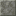

磨制切制凝灰岩：冷灰的现代地面。
参数
材质凝灰岩
形制磨制整块
切石产出1 块 -> 1 块
详细教程
怎么获得
切石机专属：任意凝灰岩材质方块选磨制切制，1:1。凝灰岩最便宜，磨制版可以整层楼铺，不用心疼料。
它在材质标签里，能切回整块或改切磨制台阶、墙；地下基地改布局时这点很方便。
怎么用
磨光之后灰绿更冷更均匀，像水磨石地面，适合现代建筑、实验室、地下大厅；大面积铺开没有杂色，机器和灯都压得住。
做墙裙和护墙板也顺手，磨制面比整块耐看，近看是细方框而不是一片灰。
冷灰磨光面适合做地面分格：每四格嵌一条深板岩，整片灰地就有了模数，看着不像一整块浇出来的。
搭配与坑
配深板岩、安山石、黄铜、玻璃；冷灰磨光面配暖光灯，空间会从「地下室」变成「实验室」。
坑是太灰太冷：住宅区整屋铺会显得像医院，最好掺木地板或暖色地毯打断。磨制整块是灰绿系里最安静的一块：大面积铺会显冷，用在一面主墙上，其余留整块，比例刚好。
获取方式
被谁使用
被 3 个物品的 3 条配方用作材料。